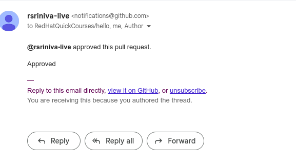
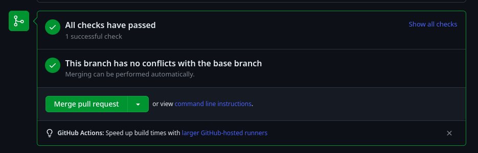
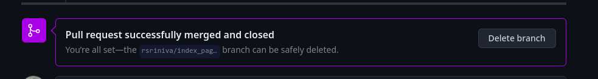
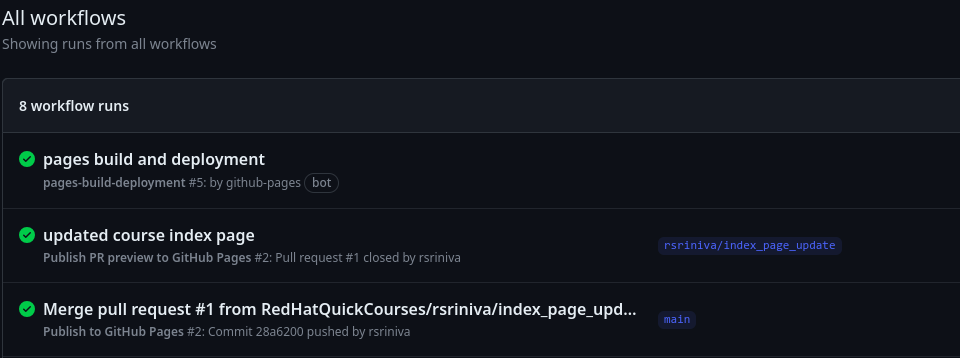
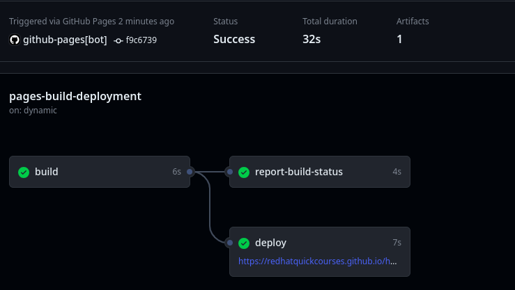
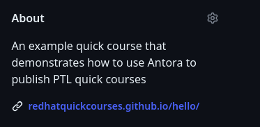

6. Publishing Content
Content in the production website is updated only with changes from the main branch. You need to merge the changes in your pull request into main after the PR is approved.
A GitHub automated job (GitHub Action) runs on every merge in the main branch and publishes the updated HTML content to the production website.
-
You should get an email notification after a reviewer approves your PR or requests more changes in the content.
Figure 1. PR approval email -
Navigate to the PR details page and inspect the comments from the reviewer (if any) and verify that the PR is approved. If there are changes needed, then make these changes in the same branch that you created the PR for and push the changes to GitHub. Request a re-review of the new changes from the reviewer.
-
After your PR is approved, you should merge the PR into the main branch.
Figure 2. Merge PR into main branchClick
Merge pull requestto merge the PR. -
Verify that your PR was merged into main.
Figure 3. PR merged into main branch -
A GitHub action should automatically run after the merge to rebuild the HTML pages for the production website. Click on the
Actionstab in the GitHub repository page for the course and verify that the GitHub action was successful.Figure 4. GitHub actions to rebuild HTML pages -
It may take a few minutes for the automated job to run. Click on the latest
pages and deploymentrun.Figure 5. GitHub actions deploy to productionThe
deploytask should display the link to the production website with the latest generated HTML content. -
Click on the link in the
deploytask to view the latest rendered asciidoc content. You can also view the latest content from the home page of the GitHub repository for the course by clicking the link in theAboutsection in the panel on the right.Figure 6. View latest production content